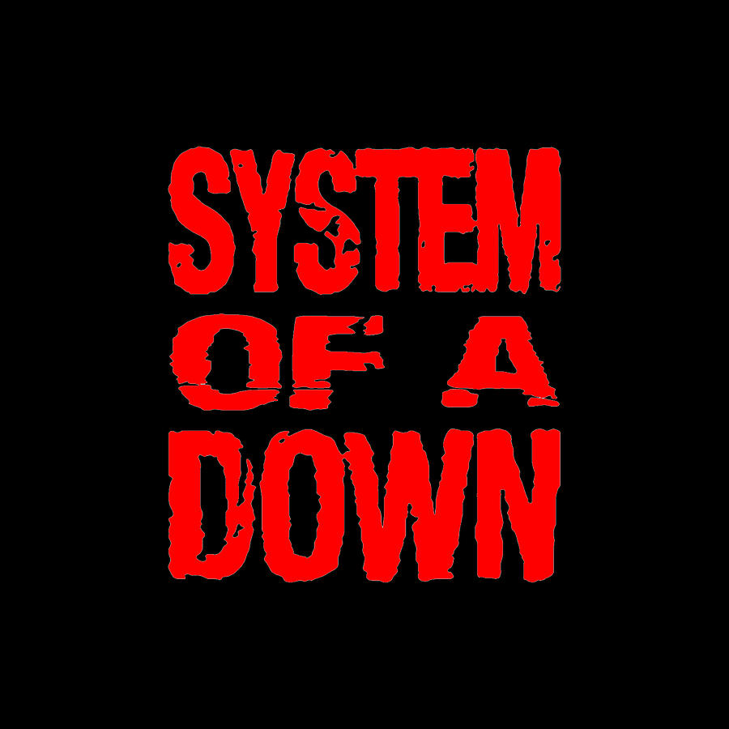
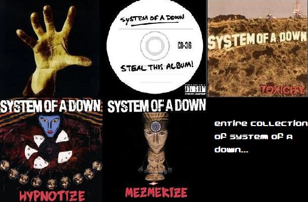

SOAD Fan Website

About System Of A Down
System of a Down is an Armenian-American rock band formed in 1994 in Los Angeles, California. The band's lineup consists of vocalist Serj Tankian, guitarist Daron Malakian, bassist Shavo Odadjian, and drummer John Dolmayan. The band members originally met through school and mutual friends in the Armenian-American community. They began playing together under the name Soil, but later changed it to System of a Down in 1995. The name "System of a Down" reportedly originated from a poem written by Daron Malakian. System of a Down's musical style is often described as a blend of alternative metal, nu metal, and experimental rock, with elements of punk, folk, and Middle Eastern music influences. They are known for their unconventional song structures, politically charged lyrics, and energetic performances. One of the band's notable achievements is the success of their debut album, self-titled "System of a Down," released in 1998. The album featured hits like "Sugar" and "Spiders" and garnered critical acclaim for its unique sound and provocative lyrics. Their subsequent albums, including "Toxicity" (2001), "Steal This Album!" (2002), and "Mezmerize" and "Hypnotize" (both released in 2005 as a double album), further solidified their status as one of the most innovative and influential bands of the early 2000s. System of a Down's music often addresses social and political issues, including war, genocide, government corruption, and environmentalism. Their outspokenness on these topics has earned them a dedicated fanbase and critical acclaim. The band has won multiple awards over the years, including a Grammy Award for Best Hard Rock Performance for their song "B.Y.O.B." in 2006. They have also been nominated for several other Grammy Awards and have received widespread recognition for their contributions to the rock music genre. Despite going on hiatus for several years following the release of "Hypnotize" in 2005, System of a Down reunited for live performances in 2011 and have continued to tour sporadically since then. While they have not released new music since "Hypnotize," their impact on the rock music landscape remains significant, and they continue to be revered by fans around the world.
About Band Members

Analysis Of SOAD Lyrics

Songs
- Toxicity (2001)
- Prison Song
- Needles
- Deer Dance
- etc.
- Hypnotize (2005)
- Attack
- Dreaming
- Kill Rock 'n Roll
- etc.
- Steal This Album! (2002)
- Chic 'N' Stu
- Bounce
- Mr. Jack
- etc.
- System of a Down (1998)
- Suite-Pee (personal favorite)
- Know
- Sugar
- etc.
Interpretations/Analyses
- Toxicity (2001):
- Prison Song: Discusses the prison-industrial complex and the injustices within the system.
- Needles: Explores themes of addiction and the feeling of being trapped.
- Deer Dance: Addresses political corruption and social unrest.
- Hypnotize (2005):
- Attack: Reflects on the influence of media manipulation and propaganda.
- Dreaming: Explores themes of escapism and the pursuit of personal freedom.
- Kill Rock 'n Roll: Critiques the commercialization of music and the entertainment industry.
- Steal This Album! (2002):
- Chic 'N' Stu: Satirizes consumer culture and the fast food industry.
- Bounce: Discusses the Armenian Genocide and historical injustices.
- Mr. Jack: Addresses gun violence and societal apathy towards tragedies.
- System of a Down (1998):
- Suite-Pee: Introduces the band's signature blend of social commentary and aggressive sound.
- Know: Explores themes of existentialism and the search for meaning.
- Sugar: Critiques the impact of materialism and consumerism on society.
Contact
If you have more information about the band that we dind't add in contact this gmail: @fakegmail.com